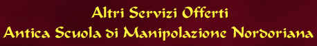
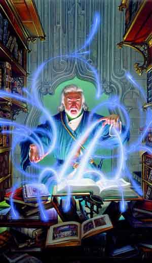

Presso la sede
centrale dell'Antica Scuola di Manipolazione Nordoriana possono essere acquistate i seguenti liquidi magici.
Si noti che tutte le
pozioni vendute dall'Accademia hanno una
probabilità di riuscita dell'80%,
se si vuole acquistare una pozione la cui efficacia sia stata controllata
magicamente e certificata occorre pagare un prezzo supplementare di
100 corone.
La possibile presenza
indica la percentuale di presenza della pozione, pronta per la vendita, presso
il magazzino dell'Accademia. Se il tiro percentuale riesce è presente una
singola pozione e può effettuarsi un ulteriore tiro riducendo la percentuale del
malus indicato tra parentesi per verificare la presenza di una seconda pozione.
Si potrà, quindi, procedere per verificare la presenza di ulteriori pozioni fino
a che i tiri sono effettuati con successo e fino a che applicando il malus
(cumulativamente dopo ogni tiro) non sia raggiunta una percentuale pari od
inferiore a 0. Una volta effettuato il tiro lo stesso
non potrà ripetersi prima che siano trascorsi tre mesi.
Nei casi in cui il liquido magico non è presente in magazzino potrà essere
ordinato. In questo caso sarà necessario pagare interamente ed anticipatamente
il costo del liquido magico che potrà essere ritirato presso l'Accademia una
volta trascorsi un numero di giorni pari a quello indicati nel
tempo di ordinazione.
Si noti che in caso di ordinativi di più liquidi magici dovrà applicarsi per un
solo liquido magico il numero di giorni addizionali variabili previsti dal tempo
di ordinazione mentre per tutti gli altri sarà applicato unicamente il numero di
giorni di ordinazione fisso che lo precede.
| LIQUIDO MAGICO | VALORE IN XP | COSTO | POSSIBILE PRESENZA | TEMPO DI ORDINAZIONE |
| Potion of Gaseous Form | 175 | 500 | 75% (-25%) | 28 + 3d10 giorni |
| Potion of Longevity | 350 | 1000 | 33% (-11%) | 34 + 3d10 giorni |
| Potion of Night Vision | 175 | 500 | 65% (-25%) | 28 + 3d10 giorni |
| Potion of Cat Agility (15) | 125 | 400 | 60% (-20%) | 26 + 3d10 giorni |
| Potion of Lynx Agility (16) | 200 | 600 | 60% (-20%) | 28 + 3d10 giorni |
| Potion of Jaguar Agility (17) | 300 | 900 | 33% (-11%) | 32 + 3d10 giorni |
| Potion of Panther Agility (18) | 400 | 1250 | 33% (-11%) | 36 + 3d10 giorni |
| Potion of Buffalo Constitution (15) | 125 | 400 | 60% (-20%) | 26 + 3d10 giorni |
| Potion of Wild Boar Constitution (16) | 200 | 600 | 60% (-20%) | 28 + 3d10 giorni |
| Potion of Black Bear Constitution (17*) | 250 | 750 | 33% (-11%) | 30 + 3d10 giorni |
| Potion of Grizzly Constitution (18*) | 300 | 900 | 33% (-11%) | 32 + 3d10 giorni |
| Potion of Least Orc Power (16) | 125 | 400 | 60% (-20%) | 26 + 3d10 giorni |
| Potion of Lesser Orc Power (17) | 200 | 600 | 60% (-20%) | 28 + 3d10 giorni |
| Potion of Orc Power (18) | 250 | 750 | 50% (-25%) | 30 + 3d10 giorni |
| Potion of Least Hero Power (18/01*) | 275 | 825 | 33% (-11%) | 32 + 3d10 giorni |
| Potion of Lesser Hero Power (18/51*) | 325 | 1000 | 33% (-11%) | 34 + 3d10 giorni |
| Potion of Hero Power (18/76*) | 375 | 1150 | 33% (-11%) | 36 + 3d10 giorni |
| Potion of Superior Hero Power (18/91*) | 425 | 1300 | 33% (-11%) | 38 + 3d10 giorni |
| Potion of Ogre Power (18/100*) | 600 | 1750 | 33% (-11%) | 44 + 3d10 giorni |

L'Antica Scuola di Manipolazione Nordoriana produce su richiesta, i più comuni incantamenti minori dei maghi. In primo luogo, l'Accademia incanta, su richiesta, oggetti portati dai clienti. Il cliente dovrà procurarsi un oggetto e consegnarlo all'Accademia e pagare, tutto anticipatamente, un contributo di 5 corone + il valore dell'incantamento prescelto. L'Accademia garantisce la consegna dell'oggetto perfettamente incantato in un tempo pari al 300% del tempo minimo normalmente richiesto per la produzione dell'incantamento. Per gli incantamenti di scuola di magia diversa dall'alterazione si richiede però un prezzo supplementare del 5% sul valore dell'incantamento e la consegna avverrà in un tempo pari al 400% del tempo minimo normalmente richiesto per la produzione dell'incantamento.
L'Accademia, inoltre, richiede che sia consegnata per le armi, quantomeno un'arma di qualità superba, per le corazze una corazza di fattura eccellente, per le gemme una gemma di qualità buona e 6 carati. L'Accademia per propria politica non incanterà, infatti, oggetti di qualità inferiore a quella su specificata. Ciò non toglie, però, che il cliente possa, assumendosi normalmente il rischio di fallimento, organizzarsi con un singolo mago accademico per l'incantamento del proprio oggetto.
L'Accademia di Alterazione è famosa in quanto è specializzata nella creazione di oggetti magici in grado di potenziare, alterandole, le statistiche fisiche delle creature viventi. In particolare sono state studiate due diverse tecniche di manipolazione. Indipendentemente dalla tecnica utilizzata per tutti gli oggetti magici di potenziamento fisico si applicano le seguenti regole comuni :
* Non sono sviluppati oggetti magici di potenziamento delle abilità mentali (Int., Sag. e Car.)
* Ogni abilità è legata al tipo di oggetto specifico che meglio è in grado di contenere il potenziale magico (forza = guanti; costituzione = cinture; destrezza = stivali)
* I tessuti che contengono queste magie sono incantati anche da una magia di alterazione che li rende indossabili come misura perfetta da tutte le creature di taglia M indipendentemente dal loro fisico (si adattano magicamente alla creatura). Se si desidera ordinare oggetti per creature di taglia diversa occorre un prezzo aggiuntivo e attendere di più : Size T +15% costi +2 mesi attesa; Size S +10% costi +1 mese attesa; Size L +20% costi +3 mesi attesa.
1) Il Potenziamento Magico, in questo caso la magia potenzia solo l'abilità fisica naturale della creature viventi, rafforzando quindi la base di partenza che la creatura già possiede. Poiché non è del tutto alterata la caratteristica fisica del soggetto, è possibile indossare quanti oggetti magici di questo tipo si vuole. Qualora sia potenziata magicamente la medesima abilità (anche se con diversi metodi magici) sarà applicato solo il potenziamento più forte mentre gli altri resteranno temporaneamente sospesi. In nessun caso, inoltre, il punteggio raggiunto potrà superare il massimo razziale previsto da chi usufruisce di questo effetto magico. Gli oggetti creati dall'Accademia secondo questa tecnica sono :
| Gauntlet of Strenght | 3 mesi | 5,000 corone (500 xp) |
|
Questi guanti magici donano a chi li indossa 1 punto supplementare di forza (o il 10% se ha già forza straordinaria), la forza della creatura non può comunque superare quella massima prevista dalla sua razza (un umano potrà quindi arrivare a forza 18 oppure 18/00 se guerriero). Essendo questo punto di forza acquisito magicamente deve essere sottratto dai punti che il personaggio otterrà attraverso magie (come strenght) che ne aumentino la forza fisica. |
||
| Boot of Agility | 3 mesi | 5,000 corone (500 xp) |
|
Questi stivali magici donano a chi li indossa 1 punto supplementare di destrezza, la destrezza della creatura non può comunque superare quella massima prevista dalla sua razza (un umano potrà quindi arrivare a destrezza 18). Essendo questo punto di destrezza acquisito magicamente deve essere sottratto dai punti che il personaggio otterrà attraverso magie che ne aumentino l'agilità. |
||
| Girdle of Constitution | 3 mesi | 5,000 corone (500 xp) |
|
Questa cintura magici donano a chi li indossa 1 punto supplementare di costituzione, la costituzione della creatura non può comunque superare quella massima prevista dalla sua razza (un umano potrà quindi arrivare a costituzione 18). Essendo questo punto di costituzione acquisito magicamente deve essere sottratto dai punti che il personaggio otterrà attraverso magie che ne aumentino la robustezza. |
||
2) La Sostituzione Incantata: questa seconda tecnica, invece, sostituisce totalmente l'abilità naturale della creatura. In pratica, chi indossa questo tipo di oggetti acquisisce una determinata abilità indipendentemente dalla sua statistica di partenza. Essendo una manipolazione magica molto invasiva, è possibile sottoporsi validamente ad un solo effetto magico di questo tipo. Qualora, infatti, una creatura sia sottoposta a più effetti magici di questo tipo contemporaneamente, il potenziale magico di quelli più deboli sarà temporaneamente sospeso e sarà applicata esclusivamente la sostituzione incantata che dona il punteggio di abilità in assoluto più alto (in caso di parità tutti gli effetti magici si annulleranno fra loro). Ciò indipendentemente dalla fonte di tali effetti magici (che può variare provenendo ad esempio da una pozione o da un incantesimo) nonché dall'abilità che dovrebbe essere magicamente alterata. In nessun caso, inoltre, il punteggio raggiunto potrà superare il massimo razziale previsto da chi usufruisce di questo effetto magico. Le abilità sostituite magicamente non possono essere oggetto di potenziamento magico, quest'ultimo effetto sarà, infatti, sempre applicato all'abilità originale del soggetto. Gli oggetti creati dall'Accademia secondo questa tecnica sono :
| Oggetto magico | Forza Donata | Tempo Consegna | Costo in corone |
| Least G. of Orc Power | 16 | 4 mesi | 7,000 (700 xp) |
| Lesser G. of Orc Power | 17 | 5 mesi | 12,000 (1200 xp) |
| Gauntlet of Orc Power | 18 (non straordinario) | 6 mesi | 15,000 (1500 xp) |
| Least Gauntlet of Hero Power* | 18/01 | 7 mesi | 16,500 (1650 xp) |
| Lesser Gauntlet of Hero Power* | 18/51 | 8 mesi | 20,000 (2000 xp) |
| Gauntlet of Hero Power* | 18/76 | 9 mesi | 23,000 (2250 xp) |
| Superior Gauntlet of Hero Power* | 18/91 | 10 mesi | 26,000 (2500 xp) |
| Gauntlet of Ogre Power* | 18/100 | 12 mesi | 35,000 (3000 xp) |
* Si noti che tutti i Gauntlet of Hero Power ed i Gauntlet of Ogre Power donano la forza indicata solo a coloro possono raggiungere forza straordinaria (warrior), se indossati da creature di altre classe queste otterranno il punteggio di forza : 18 (non straordinario).
| Oggetto magico | Destrezza Donata | Tempo Consegna | Costo in corone |
| Boots of Cat's Agility | 15 | 4 mesi | 7,000 (700 xp) |
| Boots of Lynx's Agility | 16 | 6 mesi | 12,000 (1200 xp) |
| Boots of Jaguar's Agility | 17 | 8 mesi | 18,000 (1800 xp) |
| Boots of Panther's Agility | 18 | 10 mesi | 22,000 (2200 xp) |
| Oggetto magico | Costituzione Donata | Tempo Consegna | Costo in corone |
| Girdle of the Buffalo | 15 | 4 mesi | 7,000 (700 xp) |
| Girdle of the Wild Boar | 16 | 6 mesi | 12,000 (1200 xp) |
| Girdle of the Black Bear * | 17 | 8 mesi | 15,000 (1500 xp) |
| Girdle of the Grizzly * | 18 | 10 mesi | 18,000 (1800 xp) |
* Si noti che la Girdle of the Black Bear e la Girdle of the Grizzly donano, come da manuale, il bonus supplementare ai punti ferita solo ai personaggi della classe warrior.
Altri oggetti magici creati dalla Scuola di Alterazione :
| Amulet of Trasformation | 5 mesi | 8000 corone (800 xp) |
|
Sono dei particolari amuleti circolari di bronzo sui quali è incisa la forma di un animale. Quando si utilizza una carica di questi amuleti chi lo indossa acquisirà la forma dell'animale che è scolpito sull'amuleto assieme a tutti i suoi oggetti (i quali però seppure inglobati si considereranno come non indossati). Questi amuleti hanno 20 cariche e possono essere ricaricati. Questi amuleti hanno casting time 1 round (durante il quale avviene la trasformazione che può essere interrotta se si perde la concentrazione e avendo comunque consumato la carica) e si attivano con la sola pronuncia, di colui che li indossa, della parola magica incisa sul retro dell'amuleto. La creatura che subisce la trasformazione mantiene la propria mentalità e i propri punti ferita ma non sarà in grado di parlare (potrà emettere i suoni tipici dell'animale in cui si è trasformato) e non potrà lanciare incantesimi. La creatura acquisterà la AC, gli attacchi (la Thac0 sarà la sua naturale non modificata) e il fattore movimento dell'animale in cui si è trasformato. La creatura può ritornare quando vuole alla forma originaria (impiegando sempre un round ma non necessitando di alcuna concentrazione), ma per tornare poi alla forma animale dovrà utilizzare un'altra carica, può invece restare in forma animale per massimo 6 ore al termine delle quali tornerà automaticamente alla forma originaria. |
||
| Amulet of Wolf | AC 7 | Mov. 18 | 1 Morso da 1-4+1 danni |
| Amulet of Cat | AC 6 | Mov. 9 / Climb 4 | 1 Graffio da 1-2 danni |
| Amulet of Falcon | AC 5 | Mov. 1 / Fly 36 | 1 Becco + 2 Artigli da 1 danno |
| Amulet of Giant Rat | AC 7 | Mov. 12 / Sw. 6 | 1 Morso da 1-3 |
VENDITA DI VERGHE DELLA STREGONERIA
L'Antica
Scuola di Manipolazione Nordoriana produce anche verghe della stregoneria
utilizzate dai suoi membri. Le verghe della stregoneria prodotte dalla scuola
sono create unicamente infondendo loro energia magica della scuola
Alteration.
L'accademia produce verghe della stregoneria inserendo incantamenti scelti
dall'acquirente. Il costo della verga deve essere anticipato interamente
all'Accademia. Tutte le verghe appena create posseggono 1d10+40 cariche. Per
verificare il funzionamento delle verghe della stregoneria consultare il
relativo regolamento (LINK).
Per ordinare una verga della stregoneria e calcolarne il costo nonché il
relativo tempo di attesa si seguano i seguenti passi:
1)
Selezionare la forma, il materiale ed il relativo costo della verga (link)
decidendo principalmente tra:
a)
Verga corta
b)
Verga lunga
Si tenga presente che, in
ogni caso, l'Accademia
non accetterà di lavorare
su verghe aventi valore negativo di possibilità di incantamento.
2)
Selezionare la scuola
di magia base della verga tra:
a) Alteration
3) Aggiungere il costo dell'incantamento
magico minore obbligatorio (link):
*
Verga della Stregoneria
[Minor Enchantment (150 xp, 1000 gp)]
4)
Selezionare
l'eventuale
incantamento magico minore
da inserire nella verga
(massimo un minor enchantment) (link):
*
Mantenimento delle Cariche Magiche
[Lesser Minor Enchantment (100 xp,
500 gp)]
*
Mantenimento Maggiore delle Cariche Magiche
[Minor Enchantment (150 xp, 1000
gp)]
*
Verga del Risparmio di Energia Magica Minore
[Superior
Minor Enchantment (250 xp, 1500 gp)]
*
Verga del Risparmio di Energia Magica
[Greater
Minor Enchantment (375 xp, 3000 gp)]§
*
Rod of Walking [Greater
Minor Enchantment (375 xp, 3000 gp)]
5) Selezionare gli
eventuali poteri di
incanalamento di energia magica
da inserire nella verga
della stregoneria. Può essere selezionato un qualsiasi numero di poteri,
aggiungere interamente il valore in corone ed in xp del potere più costoso ed il
50% del valore degli ulteriori poteri prescelti. I poteri di incanalamento di
energia magica sono i seguenti:
*
SOSTITUZIONE DI ENERGIA MAGICA
(+2.500 g.p., +300 xp)
*
ELEVAMENTO DEL LIVELLO DI
LANCIO (+2.500
g.p., +300 xp)
*
INCREMENTO DEL RAGGIO DI
AZIONE (+2.000
g.p., +250 xp)
*
INCREMENTO DELLA DURATA (+2.500
g.p., +300 xp)
*
POTENZIAMENTO DI ENERGIA MAGICA
(+2.000 g.p., +250 xp)
*
ABBASSAMENTO DELLE DIFESE
MAGICHE
(+2.000 g.p., +250 xp)
*
RIDUZIONE DELLA RESISTENZA
MAGICA (+1.500
g.p., +200 xp)
6)
Aggiungere eventualmente
un incantamento proprio della verga della stregoneria. Può essere seleziona
un unico potere magico proprio della verga tra quelli presenti nella
seguente lista. Il costo in corone ed il valore in punti esperienza del potere
deve aggiungersi interamente per determinare il valore finale dell'oggetto
magico.
Rapid Casting
(+5.000 g.p., +500 xp)
Si noti che con questo
potere magico unico possono essere incantate solo le verghe della stregoneria
che abbiamo come scuola di magia base Alteration. Quando un mago utilizza questa
verga per lanciare i propri incantesimi, costui potrà provare a velocizzare
magicamente i movimenti e le parole necessarie al lancio delle formule magiche al
fine di riuscire a lanciare in un medesimo round di gioco due incantesimi. Per
poter provare ad effettuare la prova il mago dovrà rispettare le seguenti
regole:
- Nessuno dei due
incantesimi deve superare il secondo livello di potere.
- La somma dei gradi di difficoltà dei due incantesimi non deve superare i 6
gradi di difficoltà totali (si considereranno solo i gradi nella scuola di magia
primaria).
- Nessun incantesimo può avere un casting time pari o superiore ad 1 round.
- Quando il mago utilizza questo potere non può in alcun modo modificare il
casting time degli incantesimi lanciati.
- Nel round in cui effettua il tentativo, se il tentativo riesce o fallisce
criticamente,
il mago non potrà compiere alcuna altra azione o movimento (o mezzo movimento).
Il mago dovrà determinarsi ad effettuare questo tentativo nella fase
delle intenzioni decidendo le due magie che vuole lanciare nel medesimo round ed
il loro ordine di lancio.
Effettuare
il tentativo costa al mago un
ammontare di cariche pari alla somma dei livelli di potere dei due incantesimi
(quindi dalle due alle
quattro cariche). Il mago quindi dovrà effettuare una prova di intelligenza per
determinare se è riuscito nel tentativo. Alla prova si applicherà una penalità
pari alla somma dei gradi di difficoltà dei due incantesimi (quindi da +2 a +6)
alla quale si aggiungerà un +1 per ogni incantesimo di secondo livello di potere
(con una penalità massima di +8).
Se il mago effettua un
successo critico (1 naturale):
Oltre ad essere riuscito nel
lancio di due incantesimi nel medesimo round (si applichino le regole della
prova riuscita) il mago non consuma le cariche
della verga relative al tentativo effettuato (consumerà, invece, regolarmente le
altre cariche spese nel medesimo round per diverse finalità). Inoltre, il mago potrà decidere,
eccezionalmente, di spostarsi di un mezzo movimento dopo il lancio del secondo
incantesimo.
Se la prova riesce:
Il mago riesce a lanciare i due incantesimi selezionati nel medesimo round. Gli
incantesimi risulteranno lanciati uno dopo l'altro in particolare si sommeranno
i casting time delle due magie come individuate dal mago nella fase delle
intenzioni (la penalità dovuta all'uso della verga si applicherà solo al primo
incantesimo). Qualora il mago, quindi, perda la concentrazione nel corso del
round, costui potrà fallire nel lancio anche di una sola magia a seconda della
frazione del round in cui ciò è capitato. Il mago dovrà effettuare i tiri
relativi a determinare lo special/miss cast per entrambi gli incantesimi. Il
mago non potrà effettuare alcuna altra azione o movimento nel round in corso.
Se la prova fallisce:
Il mago non riesce a
lanciare il secondo incantesimo. Si noti che in questo caso, non riuscendo
neanche ad iniziare il secondo lancio dell'incantesimo, il mago avrà speso le
cariche magiche necessarie per effettuare il tentativo ma non avrà perso i punti
magia, i componenti e le eventuali cariche magiche riguardanti il secondo
incantesimo. Il mago dovrà effettuare i tiri relativi a determinare lo special/miss
cast solo per il primo incantesimo. Il secondo incantesimo non si considererà in
alcun caso lanciato (neanche ai fini del pagamento dei punti supplementari). Il
mago potrà effettuare un'azione di mezzo movimento dopo il lancio del primo
incantesimo.
Se il mago effettua un
fallimento critico (20 naturale):
Il mago fallisce nel lancio di entrambi gli incantesimi spendendo i punti magia,
i componenti e le eventuali cariche magiche relative ad entrambe le magie (oltre
alle cariche magiche necessarie ad effettuare il tentativo). Entrambe le magie
si considereranno lanciate dal mago ai fini del cumulo dei punti magia. Il mago
non potrà effettuare alcuna altra azione o movimento nel round in corso. In
questo caso, però, il mago non dovrà effettuare i tiri relativi a determinare lo special/miss cast.
7) Calcolare il valore finale della verga in monete d'oro e punti esperienza sommando tutti i relativi addendi. Per calcolare il tempo di consegna (espresso in numero di giorni) della verga si utilizzi la seguente formula: [(1d12 *10 giorni)+(1 giorno ogni 50 monete d'oro di valore della verga)]. Si noti che l'intero prezzo della verga deve essere pagato al momento dell'ordinazione.